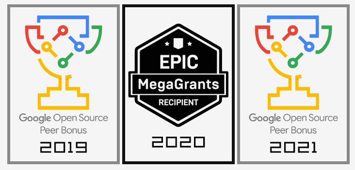
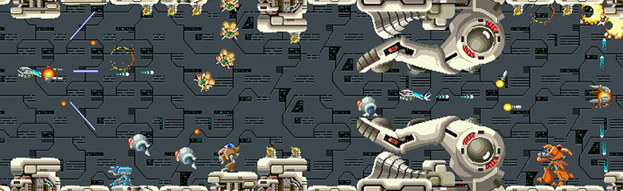

Welcome to the video game R-TYPE 🎮🚀
Welcome aboard R-Type, an adventure that takes you back in time while propelling you into the future of gaming. Inspired by the renowned classic, our game captures the very essence of R-Type but with a modern twist that makes it even more thrilling.
Dive into an epic intergalactic world where formidable enemy spacecraft and extraterrestrial creatures will attempt to thwart your progress. However, this time, there's a crucial difference: the game is multiplayer. Join forces with friends or challenge players from around the globe to showcase your shooting and strategic skills.

Introduction 📖
R-Type is an iconic series of horizontal-scrolling shoot 'em up video games developed by Irem, debuting in 1987 on an arcade machine. It was inspired by Konami's Gradius series. R-Type introduced several innovations that have been adopted by numerous other games of the same genre. Notable examples include:
GyRuss- which is a tube shooter game.Noiz2sa- which is a manic shooter game.After The War- which is a Run and Gun game.
This is a link to a YouTube video showcasing the gameplay of the game: R-type-Game
Project Goal 🎯
In the case of our R-Type study project, we need to implement our own version of the famous game, but this time with an added feature. The game must be playable online for one to four players, all of whom must work together to defeat the Evil Bidos monster.
The player's objective is to eliminate aliens, collect power-ups, defeat the boss, and progress to the next level in the game.
Furthermore, the project aims to delve into the exploration of various themes, such as:
Game Design encompasses the game interactions to make it fun and engaging for players.
A well-structured and accessible architecture for ease of communication and code exchange.
The adoption of good software product development practices.
Project Organization 📊
The R-Type project is elegantly divided into three distinct parts. Firstly, we have part 0, then part 1, and finally part 2.
It should be noted that each part of the project has a timeframe within which certain features must be implemented.
The completion duration for the first part is set at 4 weeks, while the timeline for the second part is estimated at 3 weeks.
-
Part 0 is dedicated to the meticulous creation of the project documentation. This documentation must encompass a variety of vital information, including the project's purpose, requirements for dependency installation, and cross-platform compatibility management. Furthermore, the documentation would be incomplete without a detailed description of the project compilation procedures, licensing terms, a list of contributors, as well as information regarding protocols and the project's technical aspects.
-
Regarding the management of Part 1, it entails the development of a software architecture for the network game engine, as well as the creation of a functional game prototype.
-
Part 2 goes beyond the game prototype. The objective of this Part 2 is to enhance various aspects of the product. Among the list of features to be improved, we have:
-> Software architecture Advanced -> Advanced Server/Networking -> Advanced Gameplay/Game Design
In the case of the software architecture choice, the aim is to continue designing the game engine and have a modular game engine.
However, when opting for in-depth network management, features such as data transmission efficiency and reliability, as well as the high-level networking engine architecture, need to be implemented.
Finally, for the choice of enhancing gameplay and game design, the gaming experience should be improved and enriched. Additionally, features like implementing an AI that can play the game itself.
Requirement 📌
In order to ensure a favorable evaluation for the defense and to maximize the allocation of the six credits to the project, it is imperative to meet certain prerequisites. Among these conditions, we find:
The development of a product, as opposed to the execution of a project.Compilation management with CMake.Management of third-party dependencies.Cross-Platform Management: The project must be able to compile on both Linux and Windows.Version control flow management, which includes having proper Git practices and automated Continuous Integration (CI).Dependency packagings.
Technology used 🕹️
R-type is a product that we chose to develop using Raylib and the C++ programming language.
As a reminder, Raylib is a simple and easy-to-use library/library for programming video games. It supports multiple platforms such as Windows, Linux, MacOs and Android. In addition, it can be used with several programming languages such as C/C++, Python, and Rust. It contains several modules which have distinct functionalities.
We can cite in this case:
-
The Raudio module which manages the loading of audio files and streams (including wav, modules), as well as the management of audio hardware.
-
The Core module which manages inputs, as well as the creation of windows and the OpenGL context.
-
The Raymath module manages mathematical functions and vector, matrix, quaternion models, etc.
-
The Shapes module manages 2D shapes and polygons as well as collision detection.
-
The Textures module manages the loading and manipulation of textures, by the CPU or the GPU.
-
The Text module manages everything that is text, from managing fonts to processing character strings.

Here is an illustration of different awards that the bookstore has won due to its ease of access.
Rappel 🔔
It's important to note that the game, in its original version, underwent several enhanced iterations over time. First, there was the initial version of the game, which appeared in 1987, followed by R-Type II in 1989. Additionally, there were the releases of Super R-Type, R-Type Leo, and R-Type III (The Third Lightning) in 1991, 1992, and 1994, respectively.
As a reminder, a Shoot'em up is a video game genre derived from action games in which the player controls a vehicle or character to destroy a large number of enemies using projectiles while dodging enemy projectiles to stay alive.

Here is an illustration of the game's gameplay
NetWork 🌐👥💻
A network is a group of things or people connected to each other for the purpose of communicating, sharing information, or working together towards a common goal. This can be computers connected to the internet, friends who know each other, or even interconnected roads to facilitate the movement of vehicles. In general, a network allows various elements to stay in touch and collaborate in some way.
In the case of our R-Type game, the network serves as a communication channel among different players. Additionally, in the R-Type context, we have a server that implements the entire game logic and, in addition to being multithreaded, notifies each client when a monster appears or makes a move.
Usage 🧤
For a good use of our R-type product you must have Conan and Cmake installed on your machine.
We do not pass anything as a binary parameter. The binary is independent of the inputs. Once the game is launched, this is where we specify the IP address, the port, the nickname as the player. With this data entered on the keyboard, the game can begin.
As a reminder, our product was developed using the Raylib library which is a cross-platform open source zlib/libpng license, published by Ramon Santamaria from 2013, and oriented towards the development of interactive applications, such as games.